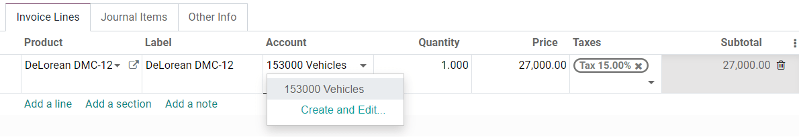
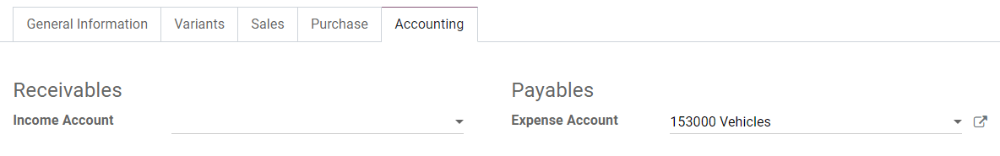
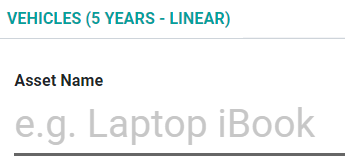

Non-current assets and fixed assets¶
Non-current Assets, also known as long-term assets, are investments that are expected to be realized after one year. They are capitalized rather than being expensed and appear on the company’s balance sheet. Depending on their nature, they may undergo depreciation.
Fixed Assets are a type of Non-current Assets and include the properties bought for their productive aspects, such as buildings, vehicles, equipment, land, and software.
For example, let’s say we buy a car for $ 27,000. We plan to amortize it over five years, and we will sell it for $ 7,000 afterward. Using the linear, or straight-line, depreciation method, $ 4,000 are expensed each year as depreciation expenses. After five years, the Accumulated Depreciation amount reported on the balance sheet equals $ 20,000, leaving us with $ 7,000 of Not Depreciable Value, or Salvage value.
Odoo Accounting handles depreciation by creating all depreciation entries automatically in draft mode. They are then posted periodically.
Odoo supports the following Depreciation Methods:
Straight Line
Declining
Declining Then Straight Line
Note
The server checks once a day if an entry must be posted. It might then take up to 24 hours before you see a change from draft to posted.
Prerequisites¶
Such transactions must be posted on an Assets Account rather than on the default expense account.
Configure an Assets Account¶
To configure your account in the Chart of Accounts, go to , click on Create, and fill out the form.

Note
This account’s type must be either Fixed Assets or Non-current Assets.
Post an expense to the right account¶
Select the account on a draft bill¶
On a draft bill, select the right account for all the assets you are buying.
Choose a different Expense Account for specific products¶
Start editing the product, go to the Accounting tab, select the right Expense Account, and save.
Tip
It is possible to automate the creation of assets entries for these products.
Change the account of a posted journal item¶
To do so, open your Purchases Journal by going to , select the journal item you want to modify, click on the account, and select the right one.

Assets entries¶
Create a new entry¶
An Asset entry automatically generates all journal entries in draft mode. They are then posted one by one at the right time.
To create a new entry, go to , click on Create, and fill out the form.
Click on select related purchases to link an existing journal item to this new entry. Some fields are then automatically filled out, and the journal item is now listed under the Related Purchase tab.

Once done, you can click on Compute Depreciation (next to the Confirm button) to generate all the values of the Depreciation Board. This board shows you all the entries that Odoo will post to depreciate your asset, and at which date.

What does “Prorata Temporis” mean?¶
The Prorata Temporis feature is useful to depreciate your assets the most accurately possible.
With this feature, the first entry on the Depreciation Board is computed based on the time left between the Prorata Date and the First Depreciation Date rather than the default amount of time between depreciations.
For example, the Depreciation Board above has its first depreciation with an amount of $ 241.10 rather than $ 4,000.00. Consequently, the last entry is also lower and has an amount of $ 3758.90.
What are the different Depreciation Methods¶
The Straight Line Depreciation Method divides the initial Depreciable Value by the number of depreciations planned. All depreciation entries have the same amount.
The Declining Depreciation Method multiplies the Depreciable Value by the Declining Factor for each entry. Each depreciation entry has a lower amount than the previous entry. The last depreciation entry doesn’t use the declining factor but instead has an amount corresponding to the balance of the depreciable value so that it reaches $0 by the end of the specified duration.
The Declining Then Straight Line Depreciation Method uses the Declining Method, but with a minimum Depreciation equal to the Straight Line Method. This method ensures a fast depreciation at the beginning, followed by a constant one afterward.
Assets from the Purchases Journal¶
You can create an asset entry from a specific journal item in your Purchases Journal.
To do so, open your Purchases Journal by going to , and select the journal item you want to record as an asset. Make sure that it is posted in the right account (see: Change the account of a posted journal item).
Then, click on Action, select Create Asset, and fill out the form the same way you would do to create a new entry.

Modification of an Asset¶
You can modify the values of an asset to increase or decrease its value.
To do so, open the asset you want to modify, and click on Modify Depreciation. Then, fill out the form with the new depreciation values and click on Modify.
A decrease in value posts a new Journal Entry for the Value Decrease and modifies all the future unposted Journal Entries listed in the Depreciation Board.
An increase in value requires you to fill out additional fields related to the account movements and creates a new Asset entry with the Value Increase. The Gross Increase Asset Entry can be accessed with a Smart Button.

Disposal of Fixed Assets¶
To sell an asset or dispose of it implies that it must be removed from the Balance Sheet.
To do so, open the asset you want to dispose of, click on Sell or Dispose, and fill out the form.

Odoo Accounting then generates all the journal entries necessary to dispose of the asset, including the gain or loss on sale, which is based on the difference between the asset’s book value at the time of the sale and the amount it is sold for.
Note
To record the sale of an asset, you must first post the related Customer Invoice so you can link the sale of the asset with it.
Assets Models¶
You can create Assets Models to create your Asset entries faster. It is particularly useful if you recurrently buy the same kind of assets.
To create a model, go to , click on Create, and fill out the form the same way you would do to create a new entry.
Tip
You can also convert a confirmed Asset entry into a model by opening it from and then, by clicking on the button Save Model.
Apply an Asset Model to a new entry¶
When you create a new Asset entry, fill out the Fixed Asset Account with the right asset account.
New buttons with all the models linked to that account appear at the top of the form. Clicking on a model button fills out the form according to that model.
Automate the Assets¶
When you create or edit an account of which the type is either Non-current Assets or Fixed Assets, you can configure it to create assets for the expenses that are credited on it automatically.
You have three choices for the Automate Assets field:
No: this is the default value. Nothing happens.
Create in draft: whenever a transaction is posted on the account, a draft Assets entry is created, but not validated. You must first fill out the form in .
Create and validate: you must also select an Asset Model (see: Assets Models). Whenever a transaction is posted on the account, an Assets entry is created and immediately validated.

Tip
You can, for example, select this account as the default Expense Account of a product to fully automate its purchase. (see: Choose a different Expense Account for specific products).
See also